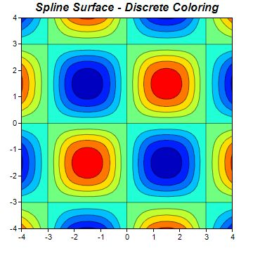
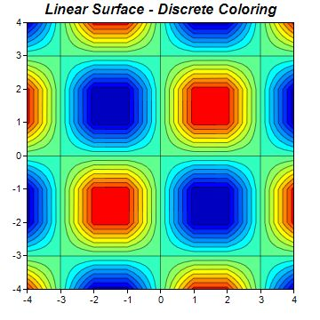
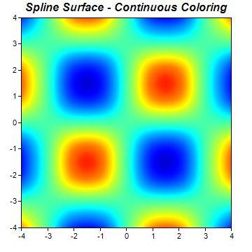
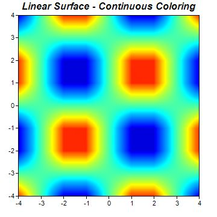

This example demonstrates spline and linear surface interpolation, and discrete and continuous coloring for the
ContourLayer.
The input to the contour layer are the z values at certain (x, y) points. To draw the contour and to color the layer, it is necessarily to know the z values at all pixels in the xy plane. ChartDirector uses surface interpolation to compute the z values at all pixels from the given data points. Two types of interpolation - spline and linear - are supported. They can be configured using
ContourLayer.setSmoothInterpolation.
The coloring of the contour layer can be discrete or continuous, configurable using
ColorAxis.setColorGradient or
ColorAxis.setColorScale.
The following is the command line version of the code in "cppdemo/contourinterpolate". The MFC version of the code is in "mfcdemo/mfcdemo". The Qt Widgets version of the code is in "qtdemo/qtdemo". The QML/Qt Quick version of the code is in "qmldemo/qmldemo".
#include "chartdir.h"
#include <math.h>
void createChart(int chartIndex, const char *filename)
{
// The x and y coordinates of the grid
double dataX[] = {-4, -3, -2, -1, 0, 1, 2, 3, 4};
const int dataX_size = (int)(sizeof(dataX)/sizeof(*dataX));
double dataY[] = {-4, -3, -2, -1, 0, 1, 2, 3, 4};
const int dataY_size = (int)(sizeof(dataY)/sizeof(*dataY));
// The values at the grid points. In this example, we will compute the values using the formula
// z = Sin(x * pi / 3) * Sin(y * pi / 3).
const int dataZ_size = dataX_size * dataY_size;
double dataZ[dataZ_size];
for(int yIndex = 0; yIndex < dataY_size; ++yIndex) {
double y = dataY[yIndex];
for(int xIndex = 0; xIndex < dataX_size; ++xIndex) {
double x = dataX[xIndex];
dataZ[yIndex * dataX_size + xIndex] = sin(x * 3.1416 / 3) * sin(y * 3.1416 / 3);
}
}
// Create a XYChart object of size 360 x 360 pixels
XYChart* c = new XYChart(360, 360);
// Set the plotarea at (30, 25) and of size 300 x 300 pixels. Use semi-transparent black
// (c0000000) for both horizontal and vertical grid lines
c->setPlotArea(30, 25, 300, 300, -1, -1, -1, 0xc0000000, -1);
// Add a contour layer using the given data
ContourLayer* layer = c->addContourLayer(DoubleArray(dataX, dataX_size), DoubleArray(dataY,
dataY_size), DoubleArray(dataZ, dataZ_size));
// Set the x-axis and y-axis scale
c->xAxis()->setLinearScale(-4, 4, 1);
c->yAxis()->setLinearScale(-4, 4, 1);
if (chartIndex == 0) {
// Discrete coloring, spline surface interpolation
c->addTitle("Spline Surface - Discrete Coloring", "Arial Bold Italic", 12);
} else if (chartIndex == 1) {
// Discrete coloring, linear surface interpolation
c->addTitle("Linear Surface - Discrete Coloring", "Arial Bold Italic", 12);
layer->setSmoothInterpolation(false);
} else if (chartIndex == 2) {
// Smooth coloring, spline surface interpolation
c->addTitle("Spline Surface - Continuous Coloring", "Arial Bold Italic", 12);
layer->setContourColor(Chart::Transparent);
layer->colorAxis()->setColorGradient(true);
} else {
// Discrete coloring, linear surface interpolation
c->addTitle("Linear Surface - Continuous Coloring", "Arial Bold Italic", 12);
layer->setSmoothInterpolation(false);
layer->setContourColor(Chart::Transparent);
layer->colorAxis()->setColorGradient(true);
}
// Output the chart
c->makeChart(filename);
//free up resources
delete c;
}
int main(int argc, char *argv[])
{
createChart(0, "contourinterpolate0.jpg");
createChart(1, "contourinterpolate1.jpg");
createChart(2, "contourinterpolate2.jpg");
createChart(3, "contourinterpolate3.jpg");
return 0;
}
© 2023 Advanced Software Engineering Limited. All rights reserved.